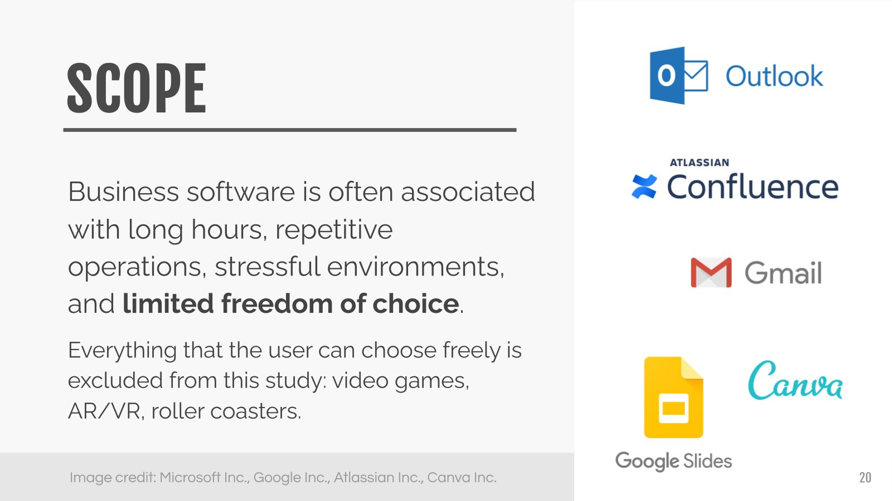
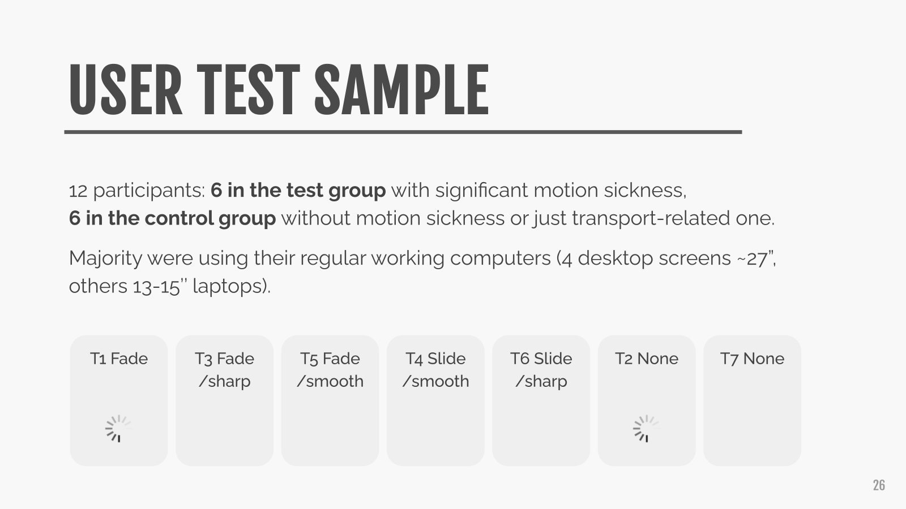
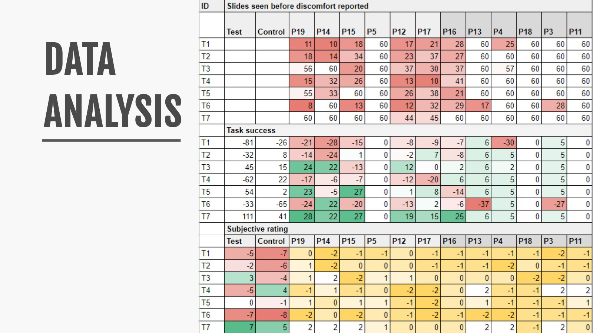
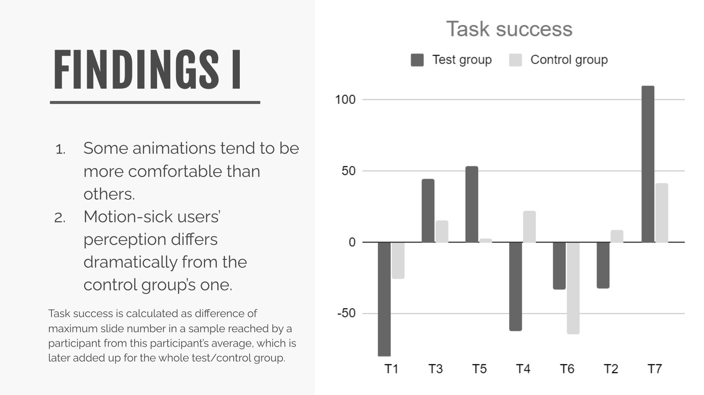
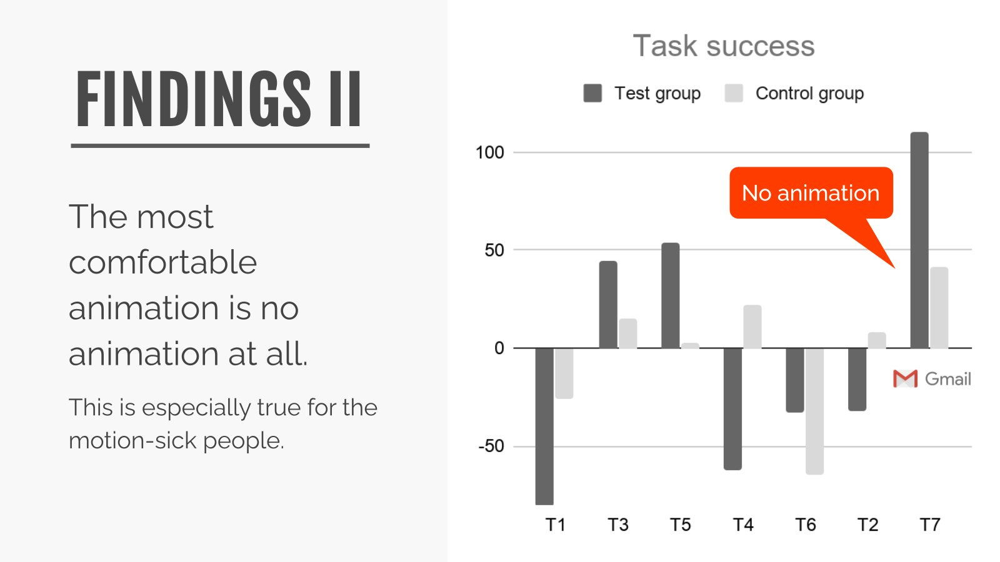
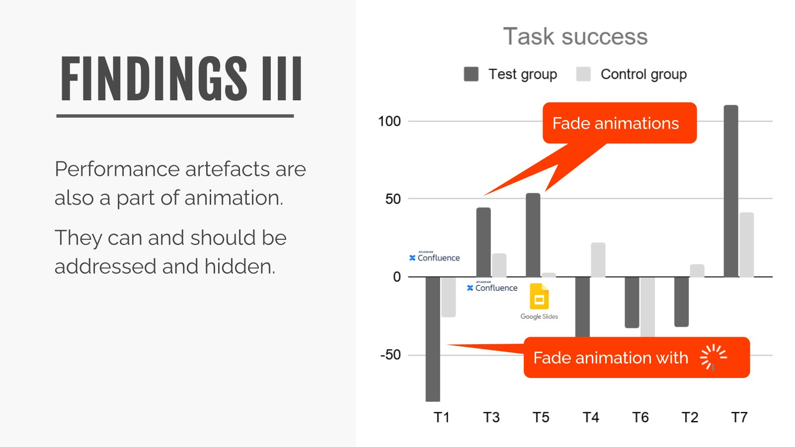
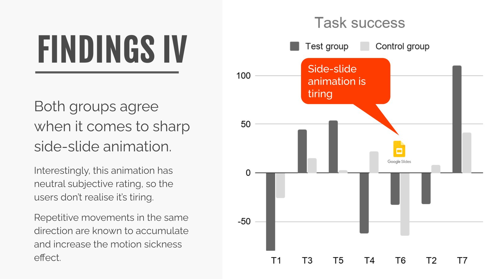
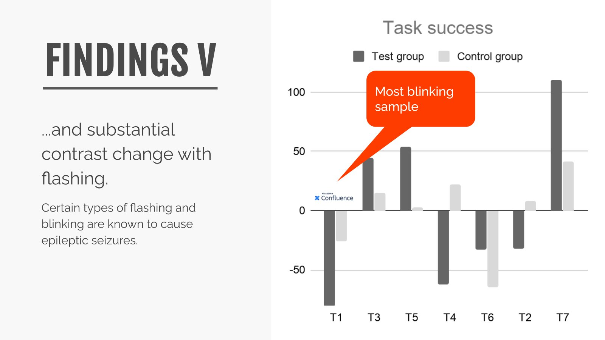
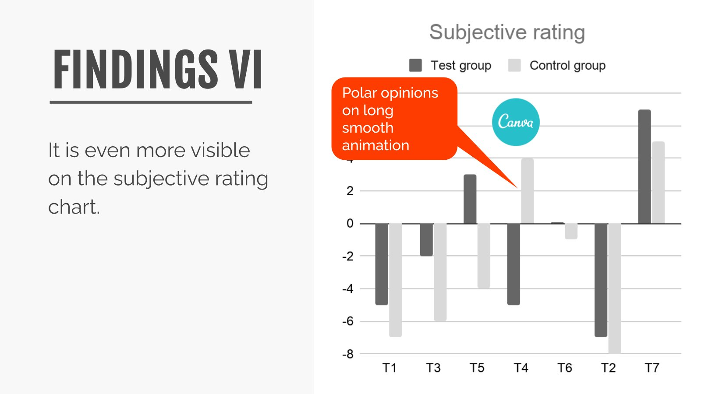
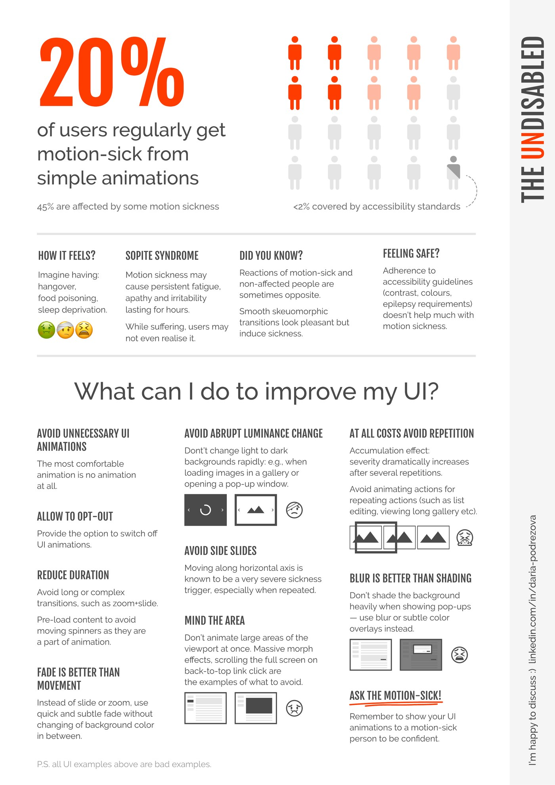

UI motion sickness research
The problem
Accessibility standards are written for permanent, clearly understood disabilities. Conditions that aren’t legally recognised as impairments, such as screen-triggered motion sickness, are rarely considered when interfaces are designed.
The study
A research project on how common UI animations in everyday business software affect people with motion sickness. A survey estimated how widespread the condition is, a task-based user test compared seven animation samples, and the findings became a design cheat sheet for software teams.
Key numbers
- of survey respondents have experienced screen-triggered motion sickness
- 45%
- experience it regularly
- 20%
- participants in the user test: 6 motion-sick, 6 in the control group
- 12
- popular business products tested that trigger motion sickness
- 4 of 5
Why motion sickness
Almost anyone can experience motion sickness when exposed to the right triggers: only people with total loss of the balance sense in the inner ear are immune to it.
It made a good focus for the study: a specific condition reported by a significant share of people, with concrete triggers in the interface (animations), quick to induce within a 30-minute test, easy to test remotely during pandemic restrictions, and easy to recruit for, as people usually know whether they have it.
What participants said
It feels weird to explain… My supervisor was very confused when he learned that I can’t play 1st person video games.
I can’t explain that I’m not kidding when I ask to stop moving during a video call.
I have a Kindle book reader, and the first thing I’ve done with it was to switch off page turning animations.
I never use the ‘Back to top’ feature on websites, as it makes me dizzy.
Scope: business software
Business software is often used for long hours, with repetitive operations, in stressful environments, and with limited freedom of choice: people can’t simply switch tools. Everything users choose freely was left out of the study: video games, AR and VR, roller coasters.
The test used slide-turning animations from popular business products: Outlook, Confluence, Canva, Google Slides and Gmail.

Why these triggers
Motion sickness happens when actual and expected motion don’t match, in particular when motion is seen but not felt (visually induced motion sickness). Closing your eyes during such scenes helps, but that’s not a workable strategy at work, although one participant did report doing exactly that.
Typical UI triggers are accelerated movement (scrolling, zooming), certain types of fades and sharp changes of contrast. During the study I compiled a video of samples from popular products.
User test
Participants flipped through slides in recordings of each product’s slide-turning animation and named the fruit on each slide: a simple task that mimics office routines such as skimming documents, attachments or book pages.
Animations were recorded on video, as live apps were unreliable over remote testing. Each sample ran for up to 60 repetitions (chosen after a pilot test) to capture the accumulating effect, in random order, with breaks and short interviews between tasks. Samples with visible loading artefacts were kept separate, and most participants used their regular work computers.
Metrics:
- Performance: how many slides a participant saw before reporting discomfort.
- Perceived comfort: a subjective rating of each sample compared to the others.
- Qualitative feedback: comments and insights from the interviews.

Data analysis
For each sample, task success is the difference between the number of slides a participant reached and that participant’s own average, added up for the test group and the control group. Subjective ratings were tallied the same way.

Findings
Some animations are clearly more comfortable than others, and motion-sick users perceive them very differently from the control group, so averaging the two groups hides the problem.

Findings: no animation is the most comfortable
The most comfortable animation is no animation at all, and this is especially true for motion-sick people. Fades come second: they get low subjective ratings, particularly from the control group, but perform well. Ugly but useful.
Loading artefacts are part of the animation too: a spinner or a sudden background change lowers both the rating and the performance, even for the best sample.


Findings: side-slides and contrast are the worst
Both groups agree on sharp side-slides: they tire everyone. Yet the animation gets a neutral subjective rating, so people don’t realise it’s wearing them out. Repetitive movement in the same direction is known to accumulate and increase the effect.
Substantial contrast change with flashing is the other strong trigger. Certain types of flashing and blinking are also known to cause epileptic seizures.


Findings: long, smooth animations split opinion
A long, smooth, skeuomorphic “zoom and slide” transition gets polar opinions. The control group likes it (“This one is the easiest as you can see what’s coming”, “I really like it, the best one”), while the motion-sick group suffers (“It irritates me”, “I feel aggression towards the author”, “It’s awful”).
And people can’t simply avoid it: the same animation is used in the app every time items are added or removed, and it can’t be turned off.

More than discomfort: sopite syndrome
People tend to endure rather than complain: some motion-sick participants carried on with the task and only later mentioned that their discomfort had started halfway through.
Long exposure to low-intensity motion that isn’t strong enough to make someone sick can still cause profound drowsiness and persistent fatigue. This “sopite syndrome” can last for hours or even days, and can include apathy, lack of initiative and irritability: a real cost for people who spend their working day in these tools.
Project outcome: the cheat sheet
The findings became a one-page cheat sheet in plain language for software teams: how to design UI that works for people with motion sickness, from avoiding unnecessary animation and side-slides to letting users opt out.
